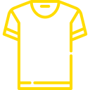

<div id="page" class="page">
    <div class="page-header">
        <div class="page-title">
            <h2>Check-In <span>Voluntários</span></h2>
        </div>
    </div>

    <div class="event-input" *ngIf="!eventSelected">
        <mat-form-field appearance="outline">
            <mat-label>Selecione um evento</mat-label>
                <mat-select [(ngModel)]="eventSelected" [ngModelOptions]="{standalone: true}" (selectionChange)="loadEventInfo()">
                    <mat-option *ngFor="let event of events" [value]="event">{{event.name}}</mat-option>
                </mat-select>
        </mat-form-field>
    </div>

    <div class="check-in-card" *ngIf="eventSelected">
        <div class="volunteer-input" *ngIf="!volunteerSelected">
            <mat-form-field appearance="outline">
                <mat-label>Selecione um voluntário</mat-label>
                    <!-- <mat-select [(ngModel)]="volunteerSelected" [ngModelOptions]="{standalone: true}" (click)="this.matInput.focus()">
                        <input type="text" matInput focus>
                        <mat-option *ngFor="let volunteer of volunteers" [value]="volunteer">{{volunteer.name}}</mat-option>
                    </mat-select> -->
                <input type="text" aria-label="Voluntário" matInput [formControl]="volunteerControl" [matAutocomplete]="autocomplete">
                <mat-autocomplete autoActiveFirstOption #autocomplete="matAutocomplete" [displayWith]="displayName" (optionSelected)="volunteerSelect($event.option.value)">
                    <mat-option *ngFor="let volunteer of filteredVolunteers | async" [value]="volunteer">{{volunteer.name}}</mat-option>
                </mat-autocomplete>
            </mat-form-field>
        </div>

        <div class="close-button" *ngIf="!volunteerSelected">
            <button mat-mini-fab matTooltip="Fechar" (click)="eventDeselect()">
                <i class="bi bi-x-lg"></i>
            </button>
        </div>
    
        <div class="volunteer-info" *ngIf="volunteerSelected">
            <div class="row">
                <div class="col-12">
                    <div class="volunteer-card-section">
                        <div class="return-button">
                            <button mat-mini-fab matTooltip="Voltar" (click)="volunteerDeselect()">
                                <i class="bi bi-arrow-left"></i>
                            </button>
                        </div>

                        <h1>{{volunteerSelected.name}}</h1>
                        <p>
                            {{volunteerSelected.team ? volunteerSelected.team.name : "Equipe não definida"}}
                            <span *ngIf="volunteerSelected.teamLeader">
                                ( Lider Equipe
                                <i class="bi bi-lightning-fill"></i>
                                )
                            </span>
                        </p>
                    </div>
                </div>
            </div>
            <mat-divider></mat-divider>
            
            <div class="row">
                <div class="col-12">
                    <div class="volunteer-card-section">
                        <h2>Escala</h2>

                        <table class="schedule">
                            <tr>
                                <th>Sessão</th>
                                <th>Área</th>
                                <th>Lanche</th>
                            </tr>
                            <tr *ngFor="let teamArea of volunteerSelected.team?.teamAreas">
                                <td>{{teamArea.period?.date | date: 'dd/MM'}} - {{teamArea.period?.description}}</td>
                                <td>{{teamArea.areaName}}</td>
                                <td>
                                    <mat-checkbox *ngIf="teamArea.period?.snack && teamArea.areaId != ''" [disabled]="!teamArea.period?.snack || teamArea.areaId == ''"
                                                    [checked]="checkSnack(teamArea.periodId)" (change)="hadSnack(teamArea.periodId)">
                                    </mat-checkbox>
                                    
                                </td>
                            </tr>
                        </table>
                    </div>
                </div>
            </div>
            <mat-divider></mat-divider>

            <div class="row">
                <div class="col-12" *ngIf="eventSelected.button || eventSelected.tshirt">
                    <div class="volunteer-card-section">
                        <h2>Entregas</h2>

                        <div class="itens-deliver">
                            <div>
                                <mat-checkbox [(ngModel)]="volunteerSelected.tshirt" matTooltip="Camiseta" matTooltipPosition="right" [matBadge]="getTshirtSizeLabel(volunteerSelected.tshirtSize)" matBadgeSize="large">
                                    
                                </mat-checkbox>
                            </div>
                            <div>
                                <mat-checkbox [(ngModel)]="volunteerSelected.button" matTooltip="Bóton" matTooltipPosition="right">
                                    
                                </mat-checkbox>
                            </div>
                            <div>
                                <mat-checkbox [(ngModel)]="volunteerSelected.wristband" matTooltip="Pulseira" matTooltipPosition="right">
                                    
                                </mat-checkbox>
                            </div>
                        </div>
                    </div>
                </div>
            </div>
            <mat-divider></mat-divider>

            <div class="row">
                <div class="col-12">
                    <div class="volunteer-card-section">
                        <h2>Check-In / Check-Out</h2>

                        <div class="itens-deliver">
                            <div>
                                <mat-checkbox [(ngModel)]="volunteerSelected.walkieTalkie" matTooltip="Rádio" matTooltipPosition="right">
                                    
                                </mat-checkbox>
                                <mat-form-field appearance="outline">
                                    <mat-label>Número</mat-label>
                                    <input type="number" matInput [(ngModel)]="volunteerSelected.walkieTalkieNumber">
                                </mat-form-field>
                            </div>
                            <div>
                                <mat-checkbox [(ngModel)]="volunteerSelected.badge" matTooltip="Crachá" matTooltipPosition="right">
                                    
                                </mat-checkbox>
                            </div>
                        </div>
                    </div>
                </div>
            </div>
            <mat-divider></mat-divider>

            <div class="col-12">
                <div class="row">
                    <div class="btn-finish">
                        <button class="btn btn-primary" (click)="finish()">Finalizar Check-In</button>
                    </div>
                </div>
            </div>
        </div>
    </div>
</div>
